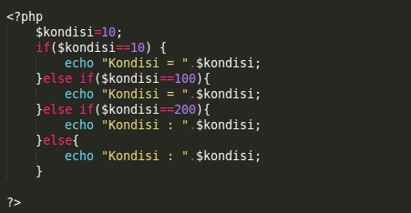

Mengontrol alur program adalah cara untuk menentukan bagaimana kode dijalankan berdasarkan kondisi tertentu. Struktur utama yang digunakan adalah percabangan dan perulangan.
Percabangan seperti if-else digunakan untuk mengambil
keputusan. Contohnya:
if (nilai >= 60) { console.log("Lulus"); } else {
console.log("Gagal"); }
akan mencetak "Lulus" jika nilai ≥ 60, selain itu mencetak "Gagal".
Perulangan digunakan untuk menjalankan kode berulang kali. Contohnya,
perulangan for:
for (let i = 1; i <= 5; i++) { console.log(i); } akan
mencetak angka 1 hingga 5.
Menggunakan struktur kontrol alur program dengan baik dapat membuat kode lebih efisien dan mudah dibaca, sehingga program dapat berjalan dengan lebih optimal.
